바이오봄 당뚝 프리미엄을 출시하며
바이오봄은 현대인의 건강에 최대의 적이라 하는 당뇨병을 극복하기 위해 서울대학교 약학대학 교수이자 서울대 천연물연구소 소장이셨던 고
신국현 박사님을 본사 초대 연구소장으로 모시고 당뇨병치료 및 예방을 위해 오랜 세월 노력해 왔습니다.
바이오봄의 천연 신소재 물질은 이길녀 암당뇨 연구소와 함께 당뇨 혈당억제 및 당뇨병 예방에 필요한 최적의 성분을 개발하였고, 이러한 노력
의 결정체로 탄생한 제품이 바로 당사에서 출시하는 BIO당뚝premium 입니다.
BIO당뚝 premium은 누구나 신뢰할 수 있는 식약처의 개별인정 원료들을 최적화한 배합으로 현대인 건강의 최대의 적으로 알려진 대사증후
군을 예방할 수 있는 최선의 길임을 확신합니다.
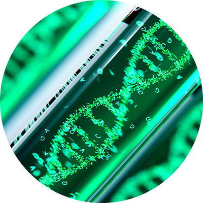
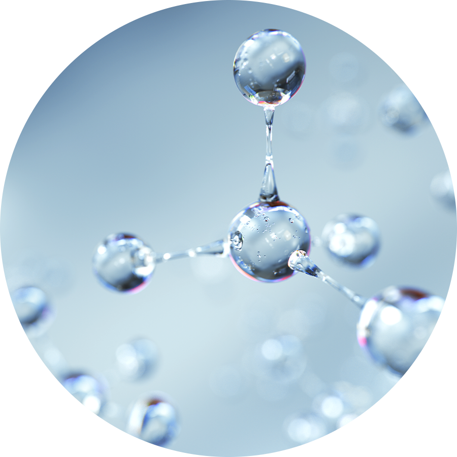
BIOBOM
PREMIUM
제품소개
바이오봄 당뚝 프리미엄이란?
BIO당 뚝 premium 은 주성분 4종을 식약처에서 인정한 건강기능식품 원료들로 엄선하여 고함량으로 배합하였습니다. 바이오봄 만의 특화
된 복합 성분은 바나바잎 추출물, 코엔자임Q10, 은행잎 추출분말, 홍국 추출물 입니다. 이러한 성분들은 식후 혈당 상승 억제, 항산화, 높은 혈
압 감소, 기억력 개선, 혈행개선, 혈중 콜레스테롤 개선 등 성인병과 대사증후군을 예방하는데 도움이 될 것입니다.
BIO당 뚝 premium 은 주성분의 기능을 특화하기 위해 노팔추출물(바이오봄 특허 및 개별인정 성분), 홍삼추출물(바이오봄 특허 및 건강기능
식품), 실크아미노산, 발효녹혈아미노산분말, 엔조제놀, 차가버섯 추출분말, 상엽추출분말, 흑후추 추출분말을 복합 배합하였습니다.
바이오봄만의 특화된 추가 배합 성분은 여러분의 당관리와 건강관리에 많은 도움이 될 것입니다. BIO당 뚝 premium 은 추가 성분으로 알타
이로즈힙 열매 추출분말, 비타민 13종, 미네랄 8종을 복합 배합하였습니다. 비타민과 미네랄 등 인체에 꼭 필요한 성분들은 여러분의 건강에
도움이 될 것입니다. 당사의 연구진, 서울대학교 약학대학 교수진 및 대학교 교수, 당사의 고문 의사들의 참여로 개발된 BIO당뚝 premium
은 최적화된 배합으로 혈당 관리 뿐만 아니라 성인병과 대사증후군, 영양소 관리에도 큰 도움이 되는 제품이 될 것 입니다.
4가지 기능성 원료
바이오봄 당뚝은?
바이오봄 당뚝은 식후 혈당상승 억제 / 높은 혈압의 감소 / 혈행과기억력 / 혈중콜레스테롤 개선 등 식약처 인증 4가지 기능성원료 플러스
바이오봄 기술을 과학적으로 배합하여 차별화된 바이오봄 당뚝이 탄생하였습니다.
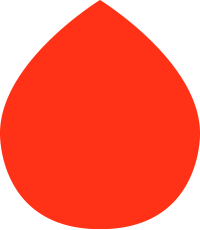
혈당• 바나바 잎 추출물• 식후 혈당상승 억제
혈압• 코엔자임Q10• 높은 혈압의 감소
혈행• 은행잎 추출물• 혈행과 기억력
콜레스테롤• 홍국 추출물• 혈중콜레스테롤 개선
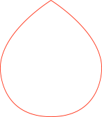
노팔 특허 추출
서울대특허 홍삼
실크 아미노산
발효 녹혈 아미노산
엔조제놀 특허
차가버섯 추출
알타이 로즈힙
상엽 추출
흑후추 추출
아연
비타민 13종
미네랄 8종
마그네슘
주요성분
바나바 잎 추출물
바나바잎 추출물은 건강기능식품으로 식후 혈당상승억제에 도움을 줄 수 있습니다.
지표물질은 코로솔산으로 일일 0.45~1.3mg을 섭취하여야 합니다.
바나바 나무는 주로 동남아 지역에 자생하며 전통적으로 당뇨를 비롯한 대사성 질환에
널리 사용되어 왔습니다. 바나바 잎에서 추출하는 주성분은 코로솔산으로 인체의 인슐린
수용체의 기능을 향상시켜 인슐린 저항성을 감소시키고 GLUT4를 활성화시켜 혈당을
개선하는데 도움이 될 수 있습니다. 또한, 내장지방 축적 및 탄수화물 대사에 영향을 미쳐
내장지방 축적을 감소시키거나 항 고지혈증 및 항산화 작용, 항균, 항염증, 항바이러스에도
도움을 줄 수 있다고 알려져 있습니다.
1
코엔자임 Q10
코엔자임Q10은 건강기능식품으로항산화 및 높은 혈압감소에 도움을 줄 수 있습니다.
지표물질은 코엔자임Q10으로 일일 90~100mg을 섭취하여야 합니다.
비타민 유사체로써 지용성 물질이며, 비타민 E, C와 함께 항산화제로 알려져 있습니다.
세포 내 에너지 생산에 필수적인 요소로 에너지가 많이 필요한 심장이나 간 등에 많이
존재합니다.
인체 내에서 합성되기도 하고 소고기, 브로콜리 등에 많이 포함되어 있는 것으로 알려져
있습니다.
2
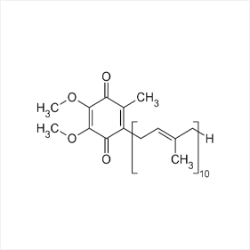
은행잎 추출분말
바나바잎 추출물은 건강기능식품으로 식후 혈당상승억제에 도움을 줄 수 있습니다.
지표물질은 코로솔산으로 일일 0.45~1.3mg을 섭취하여야 합니다.바나바 나무는
주로 동남아 지역에 자생하며 전통적으로 당뇨를 비롯한 대사성 질환에 널리 사용
되어 왔습니다. 바나바 잎에서 추출하는 주성분은 코로솔산으로 인체의 인슐린 수용
체의 기능을 향상시켜 인슐린 저항성을 감소시키고 GLUT4를 활성화시켜 혈당을 개
선하는데 도움이 될 수 있습니다. 또한, 내장지방 축적 및 탄수화물 대사에 영향을 미쳐
내장지방 축적을 감소시키거나 항 고지혈증 및 항산화 작용, 항균, 항염증, 항바이러스
에도 도움을 줄 수 있다고 알려져 있습니다.
3
홍국
홍국은 건강기능식품으로 혈중 콜레스테롤 개선에 도움을 줄 수 있습니다.
지표물질은 모나콜린 K로서 일일 4~8mg을 섭취하여야 합니다.
홍국(紅麴米, Red yeast rice)은 홍국균(Red Yeast, Monascus purpureus)을 쌀에
접종시켜서 생산한 발효물을 말합니다. 8세기경 중국 당나라에서부터 쓰이기 시작하였
으며, 콜레스테롤을 낮추는데 사용되었습니다. 1970년 말까지만 해도 인류에게는 콜레
스테롤을 낮추는 약이 없었으나 일본의 학자 엔도 아키로가 홍국에서 약 성분 Lovastat
in(MEVACOR)를 발견하여 이것이 인류사 처음으로 콜레스테롤을 낮추는 약이 되었다고
알려져 있습니다. 홍국의 혈중 콜레스테롤 저하는 monacolin K 성분에 의한 HMG-CoA
reductase inhibition 효과 뿐만 아니라 홍국에 함유된 식물성 sterol 성분과 단가 불포화
지방산 성분이 소화관 내에서 콜레스테롤 흡수를 경쟁적으로 억제하는 복합 효과에 의해
혈중 콜레스테롤 저하 효과를 발휘하는 것으로 알려져 있습니다.
4
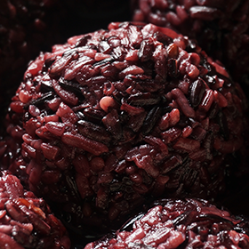
노팔추출물
노팔(Nopal)추출물은 건강기능식품으로식후 혈당조절에 도움을 줄 수 있습니다.
지표물질은 수용성식이섬유로 일일 1,000mg을 섭취하여야 합니다.
※ 바이오봄은 국내 유일하게 노팔(nopal) 추출물에 대한 개별인정과 특허등록(2건)을 받았습니다.
노팔은 멕시코 사막 순청정지역에 주로 자생하는 선인장의 일종으로 ‘하늘에서 준 선물’,
‘미래대체의학식물’, ‘그린슈퍼푸드’ 로 알려져 있으며, 최근에는 미국 슈퍼마켓에서도
노팔의 어린 줄기가 판매될 정도로 건강관리에 인기가 많습니다.
노팔은 섬유소가 많고 무기질, 비타민이 다량 함유되어 있어 인체 흡수에 좋을 뿐 아니라,
갈증 해소와 소화 기능에 도움을 줍니다.
5
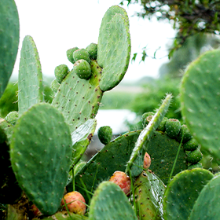
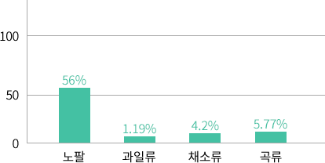
식이섬유
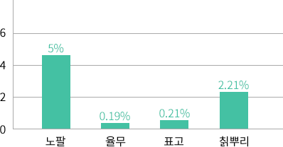
플라보노이드칼슘
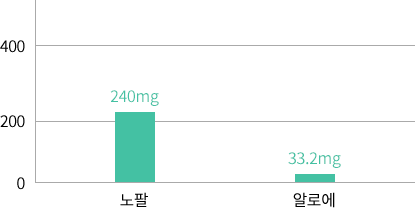
비타민 C
홍삼추출물
홍국은 건강기능식품으로 혈중 콜레스테롤 개선에 도움을 줄 수 있습니다.
지표물질은 모나콜린 K로서 일일 4~8mg을 섭취하여야 합니다.
홍국(紅麴米, Red yeast rice)은 홍국균(Red Yeast, Monascus purpureus)을 쌀에
접종시켜서 생산한 발효물을 말합니다. 8세기경 중국 당나라에서부터 쓰이기 시작하였
으며, 콜레스테롤을 낮추는데 사용되었습니다. 1970년 말까지만 해도 인류에게는 콜레
스테롤을 낮추는 약이 없었으나 일본의 학자 엔도 아키로가 홍국에서 약 성분 Lovastat
in (MEVACOR)를 발견하여 이것이 인류사 처음으로 콜레스테롤을 낮추는 약이 되었다
고 알려져 있습니다. 홍국의 혈중 콜레스테롤 저하는 monacolin K 성분에 의한 HMG-C
oA reductase inhibition 효과 뿐만 아니라 홍국에 함유된 식물성 sterol 성분과 단가 불
포화지방산 성분이 소화관 내에서 콜레스테롤 흡수를 경쟁적으로 억제하는 복합 효과에
의해 혈중 콜레스테롤 저하 효과를 발휘하는 것으로 알려져 있습니다.
6
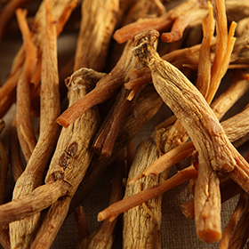
실크아미노산분말
실크아미노산은 옛날부터 건강소재로 여겨져 온 누에고치에서 추출한 18가지
아미노산입니다. '실크아미노산＇에 포함된 18가지 아미노산은 체력을 비롯해 기력,
면역력 등의 폭넓은 효능 연계성으로 운동과 균형 잡힌 식습관 등과 병행되었을 때 건
강 전반에 시너지 효과를 낼 수 있다"고 알려져 있습니다.
실크아미노산 어떤 기능 갖고 있나?
1종 당뇨병 질환의 원인인 췌장 베타세포 손상으로 인한 인슐린 부족에 있어 대식세
포와 공격세포 과잉에서 발현되는 LDH 분비량 감소를 통해 췌장벽 손상을 방지하는
유의한 결과를 보였습니다.
또, 췌장 내 베타세포 생존력을 증진시키는 전생존 유전자인 Bca-2 RNA의 활성화,
췌장 베타세포의 사멸과 관련된 유전자인 Bax의 활성화 정도 감소에 있어서도 유의한
결과를 나타냈습니다. 2종 당뇨병 질환의 원인인 인슐린 저항성에 의한 포도당 공급량
저하의 경우, 인슐린분비 세포주인 RINm5f세포주에 실크아미노산을 첨가해 배양했을
때 대조군 대비 2-4배 가량의 인슐린 빈비 촉진효과를 확인할 수 있다고 알려져습니다.
7
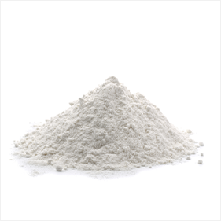
발효녹혈아미노산분말
발효녹혈아미노산 분말은 청정지역 뉴질랜드 방목 사슴의 녹혈(鹿血)을 발효 및 효소
분해 등 특수공정을 통하여(국내외특허진행) 분자량20,000~30,000로 고분자인 녹혈
단백질을 분자량1,000이하의 저분자 아미노산(팹타이드)로 분해하여 별도의 소화과정을
거치지 않고 바로 흡수가 가능하도록 한 고품질 기능성 제품입니다.
발효녹혈 아미노산분말은 98%이상이 필수아미노산과 비필수 아미노산으로 구성되어
있고 햄철(Heme Iron), 비타민류, 생리활성물질 등이 다량 함유되어 있어 면역력 강화 등
건강관리에 다양한 도움이 될 수 있습니다.
8
필수 아미노산
비필수 아미노산
종류
주요기능
종류
주요기능
이소루신-L(lle)
혈당조절강화/근육에너지원
알라닌-A(Ala)
혈당조절강화/근육에너지원
루신-L(Leu)
성장발육촉진/당뇨개선
아르기닌-R(Arg)
성장발육촉진/당뇨개선
리신-K(Lys)
성장발육촉진/항체형성
시스테인-C(Cys)
성장발육촉진/항체형성
페닐알라닌-(Phe)
호르몬분비촉진/기억력강화
프롤린-P(Pro)
호르몬분비촉진/기억력강화
메타오닌-M(Met)
전립선기능강화/지방대사촉진
세린-S(Ser)
전립선기능강화/지방대사촉진
트레오닌-T(Thr)
성장발육촉진/질소대사
티로신-Y(Tyr)
성장발육촉진/질소대사
발린-V(Val)
기억력강화/면역기능강화
글리신-G(Gly)
기억력강화/면역기능강화
히스티딘-H(His)
빈혈예방/전립선기능강화
아스파르트산-D(Asp)
빈혈예방/전립선기능강화
트립토판-W(Trp)
성장발육촉진/질소대사평형
글루탐산-E(Glu)
성장발육촉진/질소대사평형
아스파라긴-N(Asn)
면역기능강화/혈압개선
글루타민-Q(Gln)
뇌신경세포에너지원
엔조제놀
뉴질랜드산 파이너스 라디아타 (Pinus Radiata)소나무 껍질에서 국제특허기술인 순수
물추출( pure water extraction ) 공법으로 추출한 엔조제놀은 프로안토시아니딘, 바
이오플라보노이드, 유기산으로 구성된 강력한 천연 항산화ㆍ항염증, 당뇨개선 등에 효과
가 있는 천연 물질 입니다. (소나무껍질1톤에서 1kg추출)
엔조제놀(Enzogenol)은 식물성 페놀 화합물로, 소나무 껍질에 포함된 여러가지 플라보
노이드 및 페놀산으로 이루어져 있습니다. 페놀계 성분인 프로안토시아니딘은 엔조제놀
중량의 80%를 차지할 정도로 다량 포함되어 있습니다. 뿐만 아니라 엔조제놀에는 다양한
플라보이드 성분과 페놀계 단량체 카테킨, 케르세틴, 디하이드로케르세틴, 미리시틴, 스틸
벤류, 하이드록실스틸벤, 페놀산 등이 함유되어 있습니다.
엔조제놀은 인체효능임상실험연구(산화스트레스, 심혈관 건강, 눈 기능 건강, 뇌기능, 편두
통), 전임상 실험연구(피부 세포연구) 실험쥐를 이용한 연구(노화예방, 수명연장, 비만), 항산
화 및 노화방지 등 다양한 연구가 진행되고 있습니다.
9
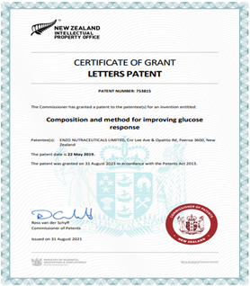
차가버섯추출분말
차가버섯추출분말은 러시아 시베리아 자작나무(베툴라 펜둘라 푸베스켄스)에서 15년 이상 자생한 차가버섯만을 채취하여 원료채취 후 최단
시간내 러시아 제약회사에서 추출, 농축, 건조하여 최고 품질을 보증합니다. 우량 원료만을 선별하여 제품을 만들고, 잔여물은 소각 처리하여
품질을 관리합니다.
10
러시아 채취
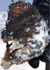
채취한 차가버섯
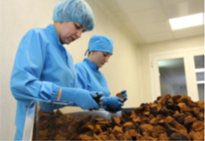
선별한 차가버섯불량원료 소각
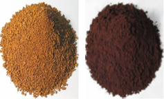
차가버섯분말 및 추출분말
차가 버섯 추출물은 연구결과 상황버섯이나 영지버섯에 비해 활성산소 처리능력이 50배 이상 우수 하고, 혈당 강화와 세포흡수 정상화에 도움
이 되며, 항암치료에서 부작용 감소와 손상된 인체기능 회복 역할 등 다양한 기능이 있다고 알려져 있습니다.
차가버섯의 활성산소처리능력 (일본식품연구소, ORP Test-산화환원전위테스트)
품명
차가버섯
상황버섯
아가리쿠스
영지버섯
활성산소처리능력(mV/g)
35,000
110
1,500
630
알타이로즈힙열매추출분말
러시아 천혜의 자연환경, 알타이의 선물! 천연비타민성분 폭탄이라 할 수 있는 알타이 로즈힙 열매는학명은 Rosa Canina로 주로 알타이지역
야생에서 자생하는 들장미의 일종입니다. 개에게 물린 상처에 사용해서 개장미라고 불리기도 합니다. 한국에서는 러시아 금앵자로 알려져 있
기도 합니다.
로즈힙 열매의 대표적인 성분은비타민입니다. 비타민C가 가장 많고 비타민A, 비타민B군, 비타민E, 비타민K 등이 대표적입니다.
비타민C는 오렌지의 10배, 비타민E는 레몬의 42배 정도입니다.
그리고 비타민C의 기능을 촉진하고 변성을 막아주는 비타민P가 함께 들어있는 것이 특징입니다.
로즈힙 열매에는 비타민 이외에도 여러 생리활성물질 등도 풍부합니다.
미국 농무부 자료에 따르면 베타카로틴, 라이코펜, 플라보노이드 등의 항산화 성분이 항산화 식품으로 유명한 아로니아,
크렌베리, 블루베리에 비해 5~20배 정도 많습니다.
또한 칼슘, 마그네슘, 칼륨, 망간, 아연 등의 ㅁ네랄과 올레산, 감마리놀렌산 등 우리 몸에 이로운 지방산, 그리고 식이섬유 등이 풍부합니다.
로즈힙은 러시아어로 ‘쉬뽀브닉’이라 부르며 천연 약재로 널리 사용되고 있으며 특히, 알타이산 로즈힙은 열매가 크고 영양성분의 함량이 높아
최고의 품질로 인정받고 있습니다. 천연비타민과 미네랄의 보고 자연산 야생 로즈힙 열매의 영양성분을 통째로 추출하여 안정성과 보관성을
뛰어나게 하였습니다. 열매를 단순히 건조, 분쇄한 가루가 아니라 핵심 영양성분이 농축 되어있는 진한 갈색의 추출분말로 새콤한 신맛이 일품
입니다.
11
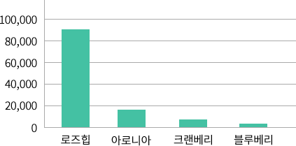
100g당 항산화 성분함량
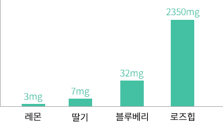
베타카로틴 함유량 비교
상엽 및 흑후추 추출분말
12
상엽(뽕나무잎)추출물
일일섭취량이 6g일 때 건강기능식품으로 식후 혈당상승 억제에 도움을 줄 수 있습니다.
당뚝 premium 제품에 적량을 사용하여 전체적인 배합기능 및 주요성분의 기능을 높이
는데 사용하였습니다.
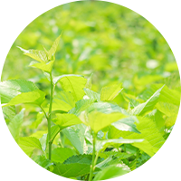
흑후추 추출물
피페린(piperine)이라는 성분이 풍부하게 함유되어 있는데, 이 성분은 연구를 통하여
강력한 항산화 기능을 갖고 있다는 것이 밝혀졌습니다. 당 뚝 premium 제품에 적량을
사용하여 전체적인 배합기능 및 주요성분의 기능을 높이는데 사용하였습니다.
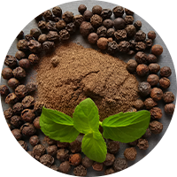
비타민, 미네랄 등
13
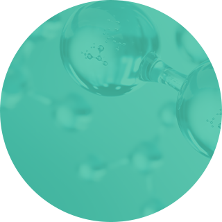
글루콘산아연
정상적인 면역기능 및 세포분열에 필요
(일일 섭취량 2.55~12mg)
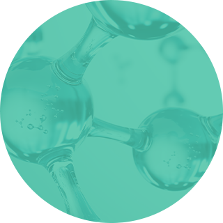
비타민13종
부족한 비타민 보강
(일일 섭취량 적량)
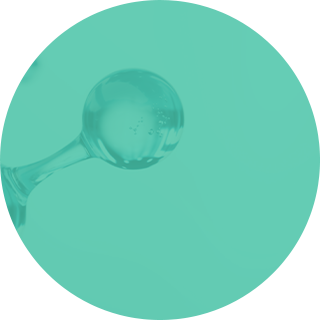
미네랄8종
부족한 미네랄 보강
(일일 섭취량 적량)
주요성분원료와 기능,
그리고 섭취량
구분
순번
원료
기능
일일 권장 섭취량
기능 및 성분
기능성
1
바나나잎 추출물
건기식
0.45 ~ 1.3mg
식후 혈당상승 억제에 도움을 줄 수 있음
2
코엔자임 Q10
90 ~ 100mg
항산화, 높은 혈압 감소에 도움을줄 수 있음
3
은행잎 추출분말
플라보놀 배당체로서 28 ~ 36mg
기억력 개선, 혈행 개선에 도움을 줄 수 있음
4
홍국
총 모나콜린 K로서 4~8mg
혈중 콜레스테롤 개선에 도움을 줄 수 있음
기능특화
5
노팔 농축 분말(특허)
바이오봄 특허
적량
식후 혈당상승 억제
6
홍삼 농축 분말 (서울대특허)
적량
면역력 증진, 피로개선 등
7
녹혈 아미노산 분말
제품기능특화
적량
면역강화 등
실크 아미노산 분말
8
엔조제놀
적량
항산화 등
프랑스 해송 추출물 (피크노 제놀)
9
차가버섯 추출 분말
적량
면역강화 등
10
상엽추출 분말
적량
식후 혈당상승 억제
11
흑후추 추출분말
적량
체중조절, 신체 대사율 조절 등
기능특화
12
아연(글루콘산아연)
영양소
2.55 ~ 12mg
영양소
13
알타이로즈힙열매 추출분말
비타민 및 미네랄
적량
비타민
14
비타민 13종
비타민
15
미네랄 8종
미네랄
섭취 시 확인 사항
POINT 1
BIO당뚝 premium을 섭취하시기 전에병의원에서 혈액검사로 당화혈색소 수치를 미리 검사하세요
POINT 2
BIO당뚝 premium을 섭취하시면서매일 혈당체크를 하세요. (저혈당 등 이상징후가 있으면 병의원에서 반드시 검사를 받으세요)
혈당이란 무엇일까요?
혈당이란 혈액 속에 포함된 포도당을 의미하며 인슐린(호르몬)의 도움을 받아 세포내부로 들어가 에너지를 만들어냅니다.
혈당이란 무엇일까요?
우리 몸이 정상적인 기능을 유지하려면 반드시 에너지가 필요합니다. 육체적인 활동 뿐만 아니라, 잠을 자거나, 숨을 쉬거나, 생각을 할 때에도,
에너지가 있어야 제 기능을 할 수 있습니다. 따라서 몸 안의 세포는 혈액으로 흐르는 영양소를 이용하여 끊임없이 에너지를 만들어야 합니다.
그 중 가장 효율적으로 에너지를 만드는 원료는 포도당으로 특히 적혈구와 뇌세포의 경우 반드시 에너지원으로 포도당을 사용해야 하므로 혈
당 공급이 더욱더 중요합니다. 따라서 혈당이 항상 일정수준으로 유지되어야 우리 몸이 에너지를 원활하게 공급 받을 수 있게 됩니다.
혈당유지에 해로운 요인은 무엇일까요?
정상적인 상태에서는 식사 후 혈당이 일시적으로 올라가지만, 인슐린에 의하여 다시 정상 수준으로 내려가게 됩니다. 그러나 췌장에서 인슐린
분비에 이상이 있거나 분비가 되더라도 그 기능을 제대로 하지 못하는 경우 식사 후 혈당이 정상 수준으로 내려가지 않게 됩니다. 즉 우리 몸에
서 포도당을 에너지로 쓰지 못하고 밖으로 배출하게 됩니다. 정상보다 높은 혈당이 지속되면 혈액을 통해 운반되는 조절물질의 이동을 방해하
거나 적혈구와 백혈구의 기능을 떨어뜨리고 신장에 부담을 주기도 합니다. 동물성 지방 및 설탕이 많이 들어 있는 식품, 과식, 과체중, 운동 부
족, 약물투여, 임신, 스트레스 등이 정상 혈당유지에 방해가 되기도 합니다.
혈당조절을 위한 일상적인 방법은 무엇일까요?
식이 조절은 식사 후 혈당을 정상수준으로 유지하는데 중요한 역할을 합니다. 소화 흡수가 빠른 과일, 설탕, 꿀, 청량음료 등 단순당은 혈당을
급격하게 높여 좋지 않은 반면에, 식이섬유소가 풍부한 잡곡, 현미, 채소 등은 당질의 흡수를 천천히 하도록 하여 혈당을 서서히 높여 혈당 조절
에 도움을 줍니다. 천천히 먹는 습관이나 과식하지 않는 습관 또한 정상 혈당 유지에 영향을 미칩니다.

 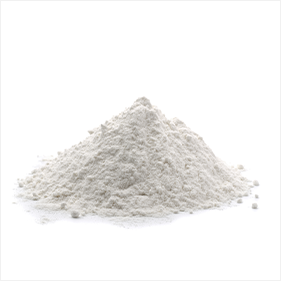
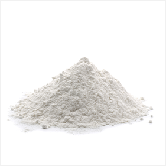